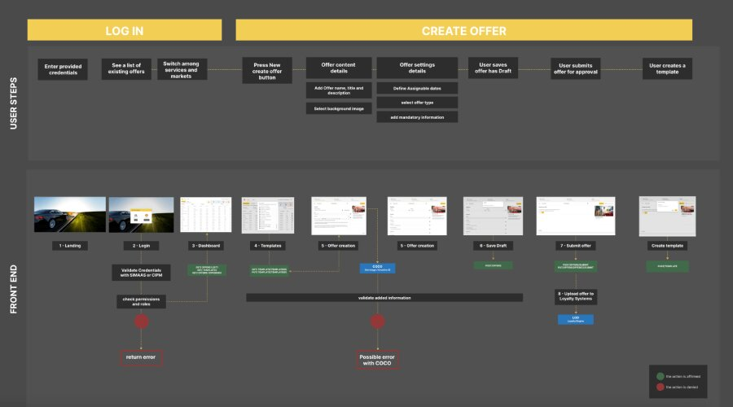
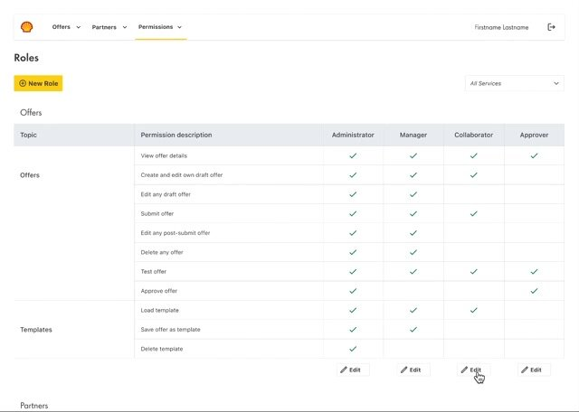
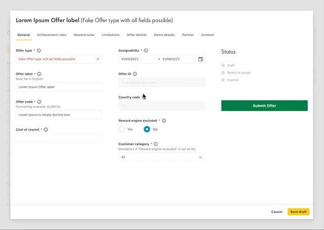
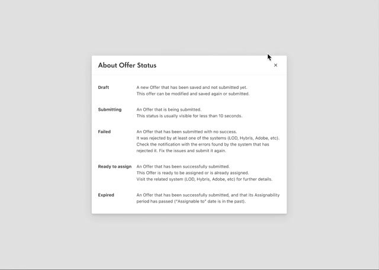

Shell Mobility: permissions instead of signatures.
A self-service tool for Shell's loyalty offers and partners, on a new microservices platform. I led its product design at DEUS.AI.
Role
Product design lead
Team
DEUS.AI engineering and product, with Shell stakeholders approving each release
Duration
2023
Outcome
96% less time to integrate partners and create rewards.
The prototype end to end: sign in, the market dashboard, a new offer, partners and roles. Placeholder content, no sound.
01
Context
Shell runs loyalty offers in many markets, often with partner brands: fuel discounts, rewards, games.
In 2023 Shell asked DEUS.AI to replace the manual processes, legacy systems and siloed teams behind those offers. Engineering designed a microservices platform; the tool on top of it was mine to design.
02
Problem
A new loyalty offer took 8 to 12 weeks: manual steps, physical sign-offs and legacy systems that surfaced errors late. Partners waited months to be set up.
Manual, error-prone steps to create offers and onboard partners.
Paper sign-offs before an offer could move on.
Legacy systems that didn't share data, so errors appeared late and far from their cause.
No shared view of offers and partners across departments.
Markets couldn't react to competitors or seasons.

Service blueprint for log-in and offer creation. The two red points, sign-in and validation, are where it failed, and the design answers both.
03
My role and what I owned
I led the design and the research behind it. Product and Shell stakeholders set priorities and approved each release.
Research: stakeholder interviews, task analysis and shadowing.
Scenarios, flows and a service blueprint for log-in and offer creation.
Interactive prototypes, validated with stakeholders.
The interface for offers, partners, users and roles.
Engineering designed and built the platform: API gateway, gRPC services and CI/CD.
04
Key decisions and trade-offs
Decision 1Permissions instead of signatures
Offers sat for weeks waiting for signatures on paper. I designed the roles with the people who sign: administrator, manager, collaborator and approver, per service. Paper could only go once the roles matched how responsibility was already divided.
Chosen
Approval inside the tool, with an Approver role.
Trade-off
A dense permission matrix, shown only to administrators. Making every permission visible was the price of removing paper.

Roles: only approvers and administrators approve.
Decision 2A form that grows with the offer type
Offer types need very different data, and many offers repeat with small changes. The form starts small and adds only the tabs a type needs. Templates load an offer to start from. Submit stays disabled, with a line saying why, until every mandatory field is valid.
Chosen
Tabs that appear by offer type, with validation before submit.
Rejected
A step-by-step wizard. Experienced users jump between sections as they edit.
Trade-off
Complex offers still mean eight tabs.

Type chosen: only the tabs it needs.
Decision 3Say which system failed, and let partners help themselves
Errors used to appear only after offers reached the loyalty systems. Now a Failed status names the system that rejected the offer and the fix. Partners get their own sign-in to request access and keep their details current.
Chosen
Failure explained where it happens, and partner self-service.
Trade-off
Each market opens on its own dashboard, so cross-market views take an extra step. Teams rarely needed them.

Statuses: Failed names the systems and the fix.
05
Outcome
96%
less time to integrate partners and create rewards.
100 days → 10 min
to onboard a partner, with partner self-service and in-tool set-up.
2 days → 15 min
to create a reward, with templates and a form that asks only what is needed.
The project also reported 9 times fewer errors in offer assignments, from validation before submit, and 3 times faster time to market from process and platform together. Figures are as reported by the project.
06
What I'd do next
Track offer creation end to end.
We reported partner onboarding and reward creation, but not the 8 to 12 week figure we started from, which is the number a business owner remembers.
Measure the full offer cycle, from request to live.
Review the permission matrix with administrators after a few months of real use.
Let's talk about your product.
I'm based in Porto and work remotely, hybrid or on site.